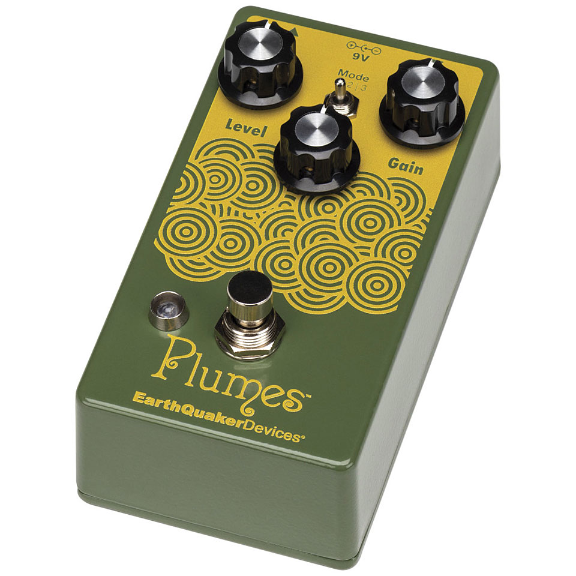

⚡ Pas le temps : le résumé 30 secondes
- 👑 Ibanez TS808 (~180 €) — l'original, le vrai, le sacré. Le circuit le plus copié de l'histoire.
- 💪 Boss SD-1 (~50 €) — le cheval de trait. Clipping asymétrique, inchangé depuis 1981.
- 💎 EHX Soul Food (~79 €) — le Klon du peuple. La transparence sans les 3000 €.
- 🪶 EQD Plumes (~129 €) — le Screamer 2.0. JFET au lieu du JRC4558.
C'est l'histoire d'un ingénieur japonais qui voulait juste éviter que les amplis transistors sonnent comme des sèche-cheveux en colère. En 1977, Susumu Tamura chez Ibanez bricole un circuit à base d'un chip JRC4558 qu'il trouve dans un tiroir, et invente sans le savoir la pédale la plus copiée du monde.
Quarante-cinq ans plus tard, des centaines de fabricants ont eu la brillante idée de « s'inspirer » de ce circuit. Certains l'ont amélioré, d'autres l'ont massacré, et quelques-uns ont eu l'honnêteté d'appeler leur pédale « Soul Food » plutôt que d'inventer un nom prétentieux. Voici les quatre qui comptent. Et si tu montes ton premier board, commence par notre guide des pédales d'effets.
4 overdrives qui révolutionnent le genre

1979 · Analogique · Icône absolue · ~180 €
Tube Screamer TS808
Ibanez
L'original, le vrai, le sacré. Né en 1979 avec un seul chip JRC4558D qui vaut aujourd'hui environ 50 centimes. Ironie absolue : le circuit le moins cher du monde est devenu le plus copié de l'histoire. On en parle en détail dans notre article dédié au Tube Screamer.
🎸 Qui l'a utilisée ?
Stevie Ray Vaughan en utilisait deux en cascade pour ses solos de blues explosifs. Tomo Fujita l'utilise en boost pour pousser ses Fender à la limite du breakup, sans jamais perdre la dynamique.

1981 · Analogique · Le cheval de trait · ~50 €
Super Overdrive SD-1
Boss
Le SD-1 existe depuis 1981 et coûte toujours moins de 50 €. C'est soit le signe que Boss ne sait pas faire du marketing, soit la preuve irréfutable que certains circuits naissent parfaits et n'ont aucune raison de changer. Son clipping asymétrique produit un grain plus mordant que le TS808.
🎸 Qui l'a utilisée ?
Kurt Cobain en aurait eu un sur son pédalier — enfin, parmi les cinquante autres pédales qu'il traînait partout. Eddie Van Halen l'utilisait en boost devant son fameux rig Marshall pour déclencher les harmoniques de ses solos.

2013 · Analogique · Le Klon du peuple · ~79 €
Soul Food
Electro-Harmonix
La Klon Centaur originale se vend aujourd'hui entre 3000 et 5000 € sur le marché de l'occasion. Pourquoi ? Mystère absolu — et c'est là qu'intervient la Soul Food. EHX a eu la brillante idée de s'en inspirer très librement pour proposer une transparence à la Klon pour le prix d'un repas.
🎸 Qui l'a utilisée ?
Des milliers de guitaristes qui ne peuvent pas se payer une Klon Centaur d'origine. Et honnêtement ? À l'aveugle, même les puristes ont du mal à entendre la différence. Ce qui dit beaucoup sur le marché des pédales boutique.

2019 · Analogique JFET · Le Screamer 2.0 · ~129 €
Plumes
EarthQuaker Devices
EarthQuaker est basé à Akron, Ohio — une ville que Jamie Stillman décrit lui-même comme un « désert post-apocalyptique ». De là, ils fabriquent à la main des pédales qui ridiculisent beaucoup de boutiques bien plus prétentieuses. Le Plumes jette le sacré JRC4558 à la poubelle et le remplace par un circuit JFET — plus ouvert, moins compressé.
🎸 Qui l'a utilisée ?
Jamie Stillman lui-même (le fondateur d'EarthQuaker) l'a portée sur son pédalier pendant des années avant de la commercialiser — signe rare qu'un luthier fait confiance à son propre travail. Mark Morales (Suicidal Tendencies) l'utilise pour ses riffs punk-métal.